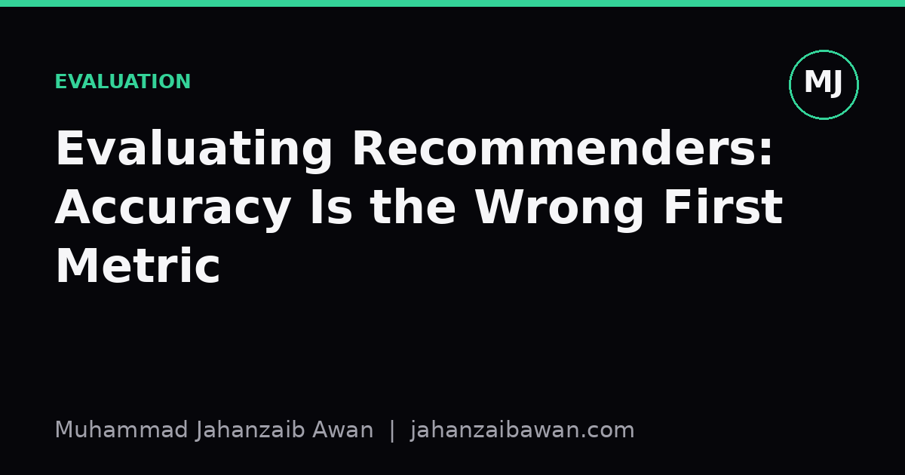

Evaluating Recommenders: Accuracy Is the Wrong First Metric
Chasing RMSE or top-N precision without asking what users actually need is a fast route to a system that scores well and helps nobody.

The seduction of a single number
When I first built a recommender, I did what most people do: I minimised RMSE on held-out ratings and watched the number fall. It felt like progress. Every epoch the error shrank a little, and I convinced myself the model was getting better at its job. The problem is that RMSE, and its cousins like precision at k or NDCG, only ever measure how well the model reproduces patterns already present in historical interaction data. They say nothing about whether the recommendations are useful, fair, diverse, or even something a user would tolerate seeing twice.
Consider a simple worked example. Suppose a streaming service has a catalogue of ten thousand films, and eighty percent of all watches are concentrated on the same two hundred blockbusters. A model that always recommends those two hundred titles, regardless of who is asking, will score extremely well on precision at ten, because most users have watched at least a few of them already. You could build this system with a single SQL query sorting by watch count, no machine learning required, and it would beat a genuinely personalised model on offline accuracy. That is not a hypothetical edge case; it is the default behaviour of popularity bias, and it dominates almost every real interaction dataset I have looked at.
The deeper issue is that accuracy metrics are computed against a fixed, already-biased log of what happened, not against what should have happened. Users only rate or click on items they were shown, so the training and test sets both inherit the exposure bias of whatever system was running before. A model optimised purely to match this history will happily learn to reproduce the bias rather than correct it. This is the recommender-systems version of leakage: the test set looks independent, but it is drawn from the same selection process as the training set, so strong offline numbers can coexist with a system that never surfaces anything new.
What accuracy quietly ignores
Three things get lost when accuracy is the only lens: diversity, novelty, and coverage. Diversity asks whether a single list of recommendations spans genuinely different items, rather than ten near-identical variations of the same thing. Novelty asks whether the system is telling the user something they did not already know, as opposed to confirming what they have already found for themselves. Coverage asks what fraction of the catalogue the system is capable of recommending at all; a model can achieve superb precision while only ever surfacing five percent of available items.
Here is a concrete illustration. Imagine two recommenders for an online bookshop, both achieving eighty-five percent precision at five on a held-out test set. Recommender A always suggests the five best-selling titles in the user's broad genre. Recommender B suggests a mix of one popular title, three well-matched but less mainstream picks, and one genuinely surprising cross-genre suggestion, calibrated to the user's specific taste signals. On the offline metric they tie. In practice, users interacting with Recommender A quickly get bored, because they have usually already seen or bought those bestsellers; users interacting with Recommender B are more likely to discover something new, which is closer to the actual value proposition of a recommender system in the first place.
Cold start makes this worse. A new user or a newly listed item has no interaction history, so any model trained to reproduce historical patterns has nothing to reproduce. Accuracy metrics computed only on warm users, which is the common practice, will simply hide this failure mode from you. If forty percent of your daily active users are less than a week old, and your evaluation set silently drops anyone with fewer than ten prior interactions, you are measuring a system that may be failing on nearly half your real traffic while reporting excellent numbers.
Building an evaluation that matches the goal
The fix is not to abandon accuracy, it is to demote it to one signal among several, chosen because they map onto an actual business or user outcome. Start by writing down, in plain language, what success looks like for this specific system. Is it purchase completion, watch-through time, long-term retention, or something else? Precision and RMSE are proxies, and proxies need to be checked against the thing they are meant to stand in for, ideally with an online experiment rather than assumed by default.
Practically, this means reporting a small basket of metrics together rather than one headline number. Alongside precision or NDCG, track catalogue coverage, an intra-list diversity score, and a novelty measure based on item popularity, so a reviewer can see the full trade-off at a glance rather than being handed a single misleadingly reassuring figure. It also means splitting evaluation by user segment, particularly cold-start users versus established ones, since averaging across both hides exactly the failure that matters most for growth.
Leakage-aware splitting deserves the same discipline here as anywhere else in machine learning. Time-based splits, where the test interactions strictly follow the training interactions in real chronological order, are essential, because random splits let future behaviour leak into training and inflate every accuracy metric you compute. Finally, treat offline evaluation as a filter for candidate models to test online, not as the final verdict; a genuine A/B test measuring retention or conversion is the only honest arbiter, and offline numbers exist to narrow down which models are worth that expensive step.
None of this is exotic advice, and none of it requires abandoning rigour. It simply asks that the first question in any recommender evaluation is not "how accurate is this" but "accurate against what, for whom, and does that even matter here". Get that ordering right and the accuracy numbers become genuinely informative rather than quietly misleading.